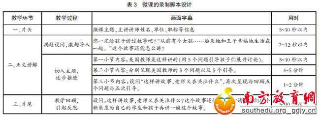

微课不仅是一种新的“课堂”表现形式，更是一种新的课程资源类型。越来越多的微课实践和研究表明：微课的制作并不仅仅是一个技术开发过程，更是一个在先进教育理念支持、精细创意的教学设计方法指导下进行的一项创造性工作，最终的决定因素还是“人”（教师）。没有教师先进教学设计理念支持的微课作品，顶多只能算是一个外表华丽、中看不中用的“视频式课件”，仍然只是传统课堂的“翻版”。当前微课制作过程中的误区主要是：相当多的教师对微课的本质特征认识不够，仅学到微课的“外表”而没有掌握其“精华”。如部分老师开发的微课基本等同于“课例片段”（从传统一整节课例中截取一段）、“微型视频”（只是视频时间短但内容发散、主题不聚焦）、“微型讲座”（以教师大头像为主不考虑学生认知和学习规律的灌输式传递式讲座），或者是“浓缩课”（把一节４０分钟的传统课压缩至１０分钟内的微课，内容和环节一个不少，只是去掉思考、自学和互动时间）。此外，许多教师把重心放在微课制作技术上。如注重课堂教学活动的视频拍摄（强调双机或多机拍摄，甚至采用昂贵的智能自动录播系统），强调视频声音和画面的精美，编辑时间和精力投入过多，甚至把师生的全程对话都打上字幕。而对微课的内容选题、教学设计、教学策略、教学活动的实施等核心环节却重视不够，导致微课的教学效果和学习效果不佳。
良好的教学设计有助于微课程教学资源的开发。微课程的设计关键是要从教学目标制定、学习者分析、内容需求分析、教学媒体选择等方面进行。这样才能符合“让教师在较短的时间内运用最恰当教学方法和策略讲清讲透一个知识点，让学生在最短的时间内自己完全掌握和理解一个有价值的知识点”的微课设计制作理念，确保微课程能够满足学习者的实用、易用和想用的直接需求。下面以著名童话故事《灰姑娘》为例，谈谈微课教学设计的主要环节和注意事项。
第一，教学内容的选择。微课的设计，教学内容的选择是第一步，也是最关键的一步。它反映了微课要集中表现或传递给学习对象什么样的内容（并不是什么内容都适合微课制作）。美国当代著名民俗学家斯蒂·汤普森在《世界民间故事分类学》一书中曾指出：“也许全部民间故事中最著名的要算《灰姑娘》了。”然而，由于中西文化的差异性，造成中国和美国教师对该童话故事的讲解存在不同的教学风格。中国教师应该如何借鉴美国教师的教学智慧呢？
第二，教学内容的微处理。在选定教学内容的基础上，继而要对其进行微处理。根据微课时长短、知识粒度小的特点，在内容分割上，把课程分割为不同的教学过程。分别是：
第一步，揭题设问，激趣导入。
第二步，切入主题，逐步推进。介绍美国教师如何讲灰姑娘的故事，即用五个问题引导孩子们展开讨论（见表２）；继而展开微课的重点，逐个介绍五个问题以及五个引导，在此基础上，趁热打铁，向学习者提问：“这样讲故事，老师又在关注什么？”
第三步，教学回顾，引起学习者反思。通过再次设问“这样讲故事，老师又在关注什么”，牵引学习者回顾五个问题与五次引导。

媒体设计决定微课最终的表现形式，其优劣性直接决定了微课的质量。目前微课视频的媒体呈现形式多样，分别有摄制型微课、录屏型微课、软件合成式微课以及混合式微课。笔者认为，该微课更倾向于视听演示，择优选用了软件合成式，即“屏幕录制软件（Ｃａｍｔａｓｉａ Ｓｔｕｄｉｏ）＋ＰＰＴ”的制作组合。用屏幕录制软件可以完整地录制ＰＰＴ课件的内容，在做好音频调试、屏幕设置、灯光设计、环境调适等准备工作后，正确操作该软件，就可一键搞定。在此基础上，对部分细节，如间隔太长、时间太短、字幕标题等问题，可以在该软件中编辑修改，最后合成输出教学视频。
可用性设计源于设计学领域的研究成果，本指企业为客户提供Ｗｅｂ及Ｗｅｂ－ｂａｓｅｄ产品情绪情感体验设计的流程和方法。在国内，顾小清（２００９）等人也提出了微型移动学习的可用性设计研究，他们认为，“对于微型移动学习的设计，除了考虑内容、媒体的设计之外，还需要从用户的角度，对其可用性进行设计”。
微课作为在线教学视频，也需要满足在线学习者为达到学习目标、完成学习任务的积极情感体验。尤其是现今信息时代，数字化教育资源已颇为丰富，要提高微课的应用程度，必然要从学习者的角度出发，提高可用性设计的意识。一是巧妙设计情景性的教学活动，为学习者创设良好的学习情境。笔者先是从学习者的经验出发，提问“您一定给孩子讲过故事吧”，继而引出一个童话故事——“从前有个女孩……后来她和王子幸福地生活在一起”，构建一个童话故事的情境，引人入胜，为下文讲解作铺垫。二是注重ＰＰＴ的排版，提高微课的视觉效果。如注重动静结合、图文并茂、字体和字号搭配、颜色搭配以及字行、段距错落有致等ＰＰＴ制作的原则与要求。笔者先是选用表现力较强的孩童个体和群体两种类别的图片，值得说明的是，图片的排版率在５０％－９０％之间，不宜过于花哨；继而，充分利用ＰＰＴ的动作效果，对所添加的图片设置不同的动作，增强动态感，在字幕的文字方面主要采用微软雅黑和宋体的字体搭配；最后，重视ＰＰＴ颜色的协调搭配。三是注重教师的讲解的专业性和艺术性，结合教学需要，选择适当的讲解节奏，语速流利，尽量避免口头禅的出现等。